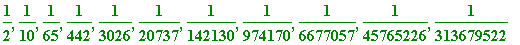

Certain quadratics: The
golden ratio
 , and
, and

Dan Brown's bestseller The Da Vinci Code features one of the most famous algebraic numbers (without, of course, being referred to as such!); unfortunately his presentation contains a number of serious errors. I quote from his Chapter 20:
" [Langdon] felt himself suddenly reeling back to Harvard, standing in front of his 'Symbolism in Art' class, writing his favourite number on the chalkboard: 1.618
Langdon turned to face his sea of eager students. 'Who can tell me what this number is?
A long-legged maths major at the back of the class raised his hand. 'That's the number
PHI.' He pronounced it
fee
.
'Nice job, Stettner,' Langdon said. 'Everyone, meet PHI.'
... ...
'This number PHI,' Langdon continued, 'one-point-six-one-eight, is a very important number in art. Who can tell me why?'
... ...
'Actually,' Langdon said, ... 'PHI is generally considered the most beautiful number in the universe.'
... ...
As Langdon loaded his slide projector, he explained that the number PHI was derived from the Fibonacci sequence - a progression famous not only because the sum of adjacent terms equalled the next term, but because the
quotients
[Brown's italics] of adjacent terms possessed the astonishing property of approaching the number 1.618 - PHI! " [end of quote]
'
 ' (PHI), the so-called
golden ratio
, is the number
' (PHI), the so-called
golden ratio
, is the number
 , and is one of the two solutions of the quadratic equation
. This number is so well known that it would be foolish for me to write about it at length; however I will make a few comments.
, and is one of the two solutions of the quadratic equation
. This number is so well known that it would be foolish for me to write about it at length; however I will make a few comments.
First,
is NOT "1.618". It is
entirely elementary
to argue that
 cannot have a terminating decimal expansion, and not only that, but being irrational it cannot have a periodic decimal expansion. (Of course I can see that Brown could have put some readers off their coffee had he used
cannot have a terminating decimal expansion, and not only that, but being irrational it cannot have a periodic decimal expansion. (Of course I can see that Brown could have put some readers off their coffee had he used
 ... , but surely he could have been advised to use '1.618... ' What view could readers form of mathematicians who would 'consider' 1.618 to be 'the most beautiful number in the universe'?)
... , but surely he could have been advised to use '1.618... ' What view could readers form of mathematicians who would 'consider' 1.618 to be 'the most beautiful number in the universe'?)
>
solve(x^2 - x - 1 = 0);
alpha := (sqrt(5) + 1)/2;
evalf(alpha);

>
It is well-known that
 is the limit of the infinite sequence {
}, where
is the limit of the infinite sequence {
}, where
 is the
n
-th Fibonacci number (they, too, make an appearance in the Da Vinci Code).
is the
n
-th Fibonacci number (they, too, make an appearance in the Da Vinci Code).
The Fibonacci numbers are the terms of the sequence 1, 1, 2, 3, 5, 8, 13, ... , , ... , where and for . Here are the first 25 of them:
> restart;
>
F[1] := 1: F[2] := 1: for k from 3 to 25 do
F[k] := F[k-1]+F[k-2] od:
seq(F[k], k = 1..25);
>
It is an elementary exercise for a beginner to prove that the sequence is strictly monotonic in creasing (early terms followed by successive differences):
> seq(F[2*n]/F[2*n-1], n = 1..12);
> seq(F[2*n+2]/F[2*n+1] - F[2*n]/F[2*n-1], n = 1..11);

>
while the sequence is strictly monotonic de creasing:
> seq(F[2*n+1]/F[2*n], n = 1..12);
> seq(F[2*n+3]/F[2*n+2] - F[2*n+1]/F[2*n], n = 1..11);
>
Also, the
n-
th term of the first sequence is less that the
n-
th term of the second sequence, and the difference between those tends to zero as
 :
:
> seq(F[2*n+1]/F[2*n] - F[2*n]/F[2*n-1], n = 1..11);
>
Thus
exists, and is easily shown to be
, namely '
 '. In fact,
every
term of the sequence {
'. In fact,
every
term of the sequence {
![F[n+1]/F[n]](images/transcendental294.gif) }, from the
12-th
onwards, is
greater
than Brown's 1.618 'limit':
}, from the
12-th
onwards, is
greater
than Brown's 1.618 'limit':
> seq(evalf(F[k+1]/F[k]), k = 1..24);
>
In short, just as
 is not 3.14 (nor
),
is not 3.14 (nor
),
 is not 1.618.
is not 1.618.